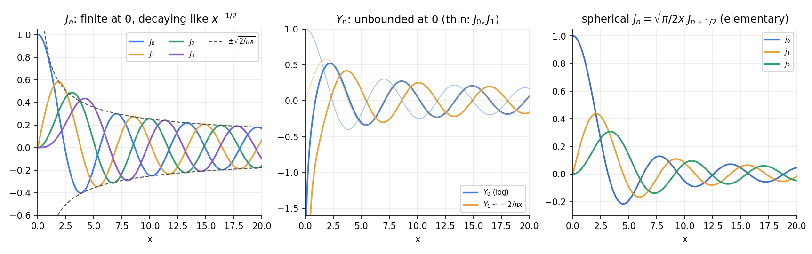
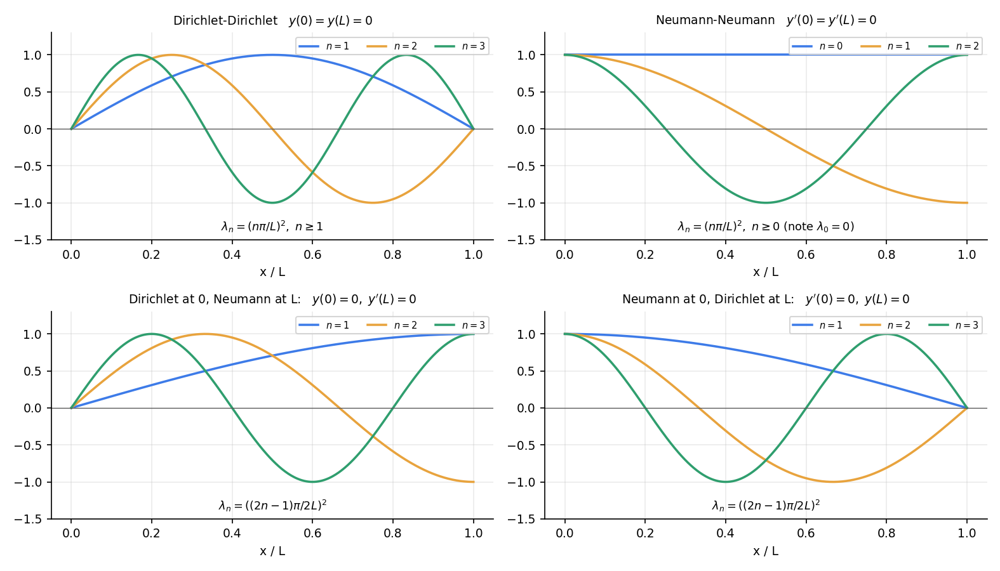

One page for the second half of MA 2102, in the order of the sheets: Bessel functions (§1) → Sturm–Liouville (§2) → first-order PDEs (§3) → second-order PDEs and canonical forms (§4) → wave (§5) → heat (§6) → Laplace (§7), then a bridge (§8) and a list of numbers worth knowing (§9). Each row says what the formula gives and when it holds. Everything here was recomputed in Tools/de_a610_bank.py (symbolic substitution or quadrature). Write the conditions from memory, not just the formulas: most lost marks are a formula used outside its conditions.
The five moves behind every question on these sheets
Move
Where
Differentiate x±νJν, use the four recurrences
Assignment 6
Put the equation in self-adjoint form, read off the weight
Assignments 6, 7
Follow the characteristics (x±ct, adx=bdy=cdu)
Assignments 8, 9
Separate variables: boundary conditions pick the eigenfunctions, the PDE picks the factor in the other variable
Assignments 9, 10
Superpose and match the data with orthogonal coefficients an=∫rfyn/∫ryn2
Assignments 6, 7, 9, 10
1. Bessel functions (Assignment 6)

Figure.Jn are finite at 0 and decay like x−1/2 (envelope 2/πx); Yn blow up at 0; the spherical jn=π/2xJn+1/2 are elementary.
1.6 Reducing an equation to Bessel form (Lecture 26)
y=xau(bxc) turns Bessel's equation of order n into
y′′+x1−2ay′+(b2c2x2c−2+x2a2−n2c2)y=0.
Divide your equation by the coefficient of y′′, then reada from the y′ term, c and b from the power of x in the y term, and n from the constant over x2. Examples: y′′+xy=0 (Airy) →a=21,c=23,b=32,n=31; y′′+e−xy=0→y=u(2e−x/2) of order 0. For integer n the second solution is Yn, not J−n.
2. Sturm–Liouville problems (Assignment 7)
2.1 Form and conversion
Item
Formula
S–L form
(py′)′+(q+λr)y=0 on (a,b), p>0,r>0; r is the weight
From y′′+fy′+(g+λh)y=0
multiply by p=e∫f: q=pg, r=hp
Lagrange identity
uLv−vLu=[p(uv′−u′v)]′ with Lv=(pv′)′+qv
Green's identity
∫ab(uLv−vLu)dx=[p(uv′−u′v)]ab
Self-adjoint when the boundary term vanishes
separated (Dirichlet, Neumann, Robin), periodic, or a singular end where p=0 and y stays bounded
piecewise-smooth f: converges to 21[f(x−)+f(x+)]; coefficients decay like n−1 (jump, or f breaks a boundary condition of the basis), n−2, n−3,… as f meets more of them
2.2 The standard equations and their weights
Equation
p
q
weight r
eigenvalue
Parametric Bessel x2y′′+xy′+(λ2x2−m2)y=0
x
−m2/x
x
λ2
Legendre (1−x2)y′′−2xy′+n(n+1)y=0
1−x2
0
1
n(n+1)
Chebyshev (1−x2)y′′−xy′+n2y=0
1−x2
0
1−x21
n2
Hermite y′′−2xy′+μy=0
e−x2
0
e−x2
μ=2n
Laguerre xy′′+(1−x)y′+λy=0
xe−x
0
e−x
n
Euler x2y′′+xy′+λy=0
x
0
x1
λ
y′′+λy=0
1
0
1
λ
2.3 Boundary conditions to eigenfunctions on [0,L] for y′′+λy=0

Boundary conditions
λn
yn
∫0Lyn2
y(0)=y(L)=0
(nπ/L)2,n≥1
sinLnπx
L/2
y′(0)=y′(L)=0
(nπ/L)2,n≥0
cosLnπx
L/2 (L for n=0)
y(0)=0,y′(L)=0
(2L(2n−1)π)2
sin2L(2n−1)πx
L/2
y′(0)=0,y(L)=0
(2L(2n−1)π)2
cos2L(2n−1)πx
L/2
periodic, [0,2π]
n2 (double for n≥1)
1,cosnx,sinnx
2π (π)
y(0)=0,y′(L)+hy(L)=0
μn2, tanμL=−μ/h
sinμnx
2L−4μnsin2μnL
y(0)=0,Ly′(L)=y(L)
0 (y=x) and μn2, tanμL=μL
x; sinμnx
the Robin case h=−1/L: a zero eigenvalue appears (Assignment-style L=1: y(1)=y′(1))
For h>0 the Robin problem has only λ>0; a negative h can admit λ=0 (at h=−1/L) and λ<0 (beyond it). Always test λ<0, λ=0, λ>0 separately.
2.4 Techniques for a non-standard eigenproblem
Situation
Substitution
Result
y′′+2ay′+(λ+…)y=0, constant coefficients
y=e−axz
z′′+(λ+⋯−a2)z=0
Euler: x2y′′+bxy′+λy
x=et
constant coefficients in t; interval [x1,x2]→[lnx1,lnx2]; y′ at x becomes Y′/x
Parity shortcuts. Even-n coefficients vanish when the data are symmetric about 2L (sine basis) and odd-n ones when antisymmetric. sin2nπ kills even n; 1−(−1)n kills even n; 1+(−1)n kills odd n.
3. First-order PDEs (Assignment 8)
3.1 Formation
Relation
PDE
Rule
f(x,y,u,a,b)=0 (two constants)
first order, usually nonlinear F(x,y,u,p,q)=0
differentiate twice, eliminate a,b
F(φ,ψ)=0 (φ,ψ known, F arbitrary)
Pp+Qq=R
P=∂(y,u)∂(φ,ψ),Q=∂(u,x)∂(φ,ψ),R=∂(x,y)∂(φ,ψ)
u=f(x+y)+g(x−y) (two functions)
second order
wave equation uxx=uyy
What the count tells you
two constants → first order (nonlinear); one arbitrary function → first order, quasi-linear; two arbitrary functions → second order
p=ux,q=uy
3.2 Lagrange's method for Pp+Qq=R
Step
Formula
Characteristic system
Pdx=Qdy=Rdu
General solution
F(φ,ψ)=0, φ=c1,ψ=c2 two independent first integrals
Check an integral
Pφx+Qφy+Rφu≡0
Multipliers
if ℓP+mQ+nR=0 then ℓdx+mdy+ndu=0; if exact, integrate
Standard multipliers
(1,1,1), (x,y,u), (x1,y1,u1), (1,−1,0); use a solved first integral to eliminate a variable
Linear coefficients
v˙=Mv: for a left eigenvector, ℓ⋅v satisfies dtd(ℓ⋅v)=λℓ⋅v, so ratios like ℓ2/ℓ1λ2/λ1 are constant
3.3 Cauchy problem
Step
Formula
Data
(x0(s),y0(s),u0(s)) on a curve
Constants
substitute into φ=c1, ψ=c2, get c1(s),c2(s), eliminate s
Unique solution near the curve if
Py0′−Qx0′=0 along the data (transversality)
If the data curve is a characteristic
no solution unless u0′=Rx0′/P (compatible), then infinitely many
Burgers uux+uy=0, u(x,0)=u0(x)
u constant on x=x0+u0(x0)y; characteristics cross at yb=−1/minu0′ (needs u0′<0)
3.4 Complete, general and singular integrals
Item
Rule
Complete integral
u=f(x,y,a,b), two parameters
General integral
put b=ϕ(a), eliminate a between f=0 and fa+fbϕ′=0
Singular integral
envelope: fa=fb=0
Clairaut u=px+qy+g(p,q)
complete integral u=ax+by+g(a,b); singular from x=−ga, y=−gb
Example
u=px+qy+p2+q2: singular integral u=−41(x2+y2), whose tangent planes are the complete integral
p2+q2=1
complete u=ax+1−a2y+b; no singular integral (∂b=1=0)
4. Second-order PDEs and canonical forms (Assignment 8)
4.1 Classification
For auxx+buxy+cuyy+⋯=0 the type depends only on the principal part:
Δ=b2−4ac
Type
Real characteristics
Model
Canonical form
>0
hyperbolic
two families
wave
uξη+⋯=0
=0
parabolic
one family
heat
uηη+⋯=0
<0
elliptic
none
Laplace
uξξ+uηη+⋯=0
The type is invariant: B′2−4A′C′=J2(b2−4ac) with J=ξxηy−ξyηx=0. Type may change from region to region (Tricomi yuxx+uyy=0: Δ=−4y).
4.2 Reduction
Step
Formula
Characteristic equation
a(dy)2−bdxdy+c(dx)2=0, i.e. dxdy=2ab±Δ
Hyperbolic
two first integrals φ1=c,φ2=c; ξ=φ1,η=φ2
Parabolic
one integral φ=c; ξ=φ, η any independent function (often x)
Elliptic
complex integral φ=α+iβ; ξ=α,η=β
New coefficients
A′=aξx2+bξxξy+cξy2, B′=2aξxηx+b(ξxηy+ξyηx)+2cξyηy, C′=aηx2+bηxηy+cηy2, D′=aξxx+bξxy+cξyy+dξx+eξy (uξ), E′ likewise with η (uη)
Last step
divide by the nonzero leading coefficient; rewrite x,y in ξ,η
4.3 Solving the canonical form
Canonical form
General solution
uξη=0
f(ξ)+g(η)
uξη=h(ξ,η)
integrate twice, add f(ξ)+g(η)
uηη=0
ηf(ξ)+g(ξ)
uξη−2η1uξ=0
uξ=ηh(ξ), so u=ηH(ξ)+G(η)
Constant coefficients auxx+buxy+cuyy=0
f(y+λ1x)+g(y+λ2x) with aλ2+bλ+c=0; repeated root: f(y+λx)+xg(y+λx); complex: F(y+λx)+G(y+λˉx)
a(L−a)n2π22hL2sinLnπa (every mode with Lna∈Z is missing)
plucked at the middle
n2π28hsin2nπ
a single sine sinLkπx
only n=k; products of sincos reduce by 2sinAcosB=sin(A+B)+sin(A−B)
velocity impulse g
Bn=nπc2∫0LgsinLnπxdx
Energy 21∫(ρut2+Tux2)dx is conserved; c2=T/ρ.
6. Heat equation (Assignment 9)
6.1 Separated solutions, ut=c2uxx on (0,L)
Boundary conditions
Series
Long-time limit
u=0 at both ends
∑bnsinLnπxe−c2n2π2t/L2, bn=L2∫fsinLnπx
0
ux=0 at both ends
A0+∑AncosLnπxe−c2n2π2t/L2, A0=L1∫f
the meanA0 (heat is conserved)
u(0)=0,ux(L)=0
∑bnsin2L(2n−1)πxe−c2(2n−1)2π2t/4L2
0
Radiating end ux(L)=−hu(L)
∑bnsinμnxe−c2μn2t, tanμnL=−μn/h
0
Slowest mode: τ1=c2π2L2. Mode n decays n2 times faster. For large t the first surviving mode dominates, so t≈τ1ln(amplitude ratio).
6.2 Non-homogeneous problems: subtract a simple solution
Data
Subtract
Then solve
ends held at A and B
w=A+LB−Ax
v=u−w with zero ends and v(x,0)=f−w
ends changed suddenly (old steady w0, new steady w1)
w1
v(x,0)=w0−w1
one end held at A, other insulated
w=A
v with mixed (Dirichlet–Neumann) basis
constant source: ut=c2uxx+Q
w′′=−Q/c2 with the boundary data
vt=c2vxx, v(x,0)=f−w
flux ends ux(0)=α, ux(L)=β
w=αx+2Lβ−αx2+Lc2(β−α)t
no steady state unless α=β: the mean rises at c2(β−α)/L
Symmetry. If f−w is antisymmetric about the midpoint (for example the old and new steady lines cross there), only even-n sine modes appear, they all vanish at the midpoint, and u(2L,t) keeps its initial value for all t. Antisymmetry about the midpoint is preserved by the heat and wave equations.
Maximum principle. The extreme values of u occur at t=0 or on the ends, never strictly inside at a later time. Backward heat flow is ill-posed (the high modes would grow like e+c2n2π2t/L2); the wave equation runs both ways.
7. Laplace equation (Assignment 10)
7.1 Rectangle 0<x<a,0<y<b and strips
Driven edge
Others
Solution term
Coefficient
top y=b: u=f(x)
0
sinanπxsinhanπbsinhanπy
a2∫0afsinanπx
bottom y=0: u=f(x)
0
sinanπxsinhanπbsinhanπ(b−y)
same
left or right edge driven
0
swap x↔y, a↔b
two or more driven edges
add the one-edge solutions
a side insulated (un=0)
use cos (or cosh with zero slope: coshanπ(y−b)) and include n=0
the n=0 term is the mean
semi-infinite strip y→∞
bounded
sinanπxe−nπy/a (or cos if insulated)
decay length nπa
Rule of thumb: the zero pair of opposite edges gets the sines; the other direction gets sinh vanishing on the opposite zero edge. Neumann compatibility: ∮∂nuds=0, and then u is unique only up to a constant.
7.2 Polar coordinates
Item
Formula
Laplacian
urr+r1ur+r21uθθ=0
Separated
Θ′′+λΘ=0, r2R′′+rR′−λR=0 (R=r±λ; λ=0: A+Blnr)
Disk r<a, u(a,θ)=f
u=2a0+∑(ar)n(ancosnθ+bnsinnθ); bounded at 0 drops r−n,lnr
Poisson integral
u=2π1∫02πa2−2arcos(θ−ϕ)+r2a2−r2f(ϕ)dϕ
Mean value
u(0)=2π1∫f; every interior value lies between minf and maxf
Exterior r>a, bounded at ∞
2a0+∑(ra)n(…)
Annulus a<r<b
(Anrn+Bnr−n) and A0+B0lnr; match both circles
Sector / half or quarter disk, 0<θ<α, zero on the rays
rnπ/αsinαnπθ; bn=α2∫0αfsinαnπθ
Radial data only
u=A+Blnr
Closed forms from summing the series
arc data f=1 on half the circle: u=21+π1arctan1−r22rsinθ; quarter disk, u=1 on the arc: u=π2arctan1−r42r2sin2θ
Maximum principle
extremes on the boundary; uniqueness for Dirichlet data